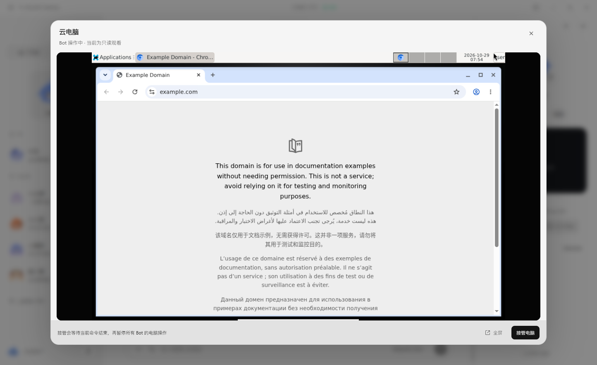
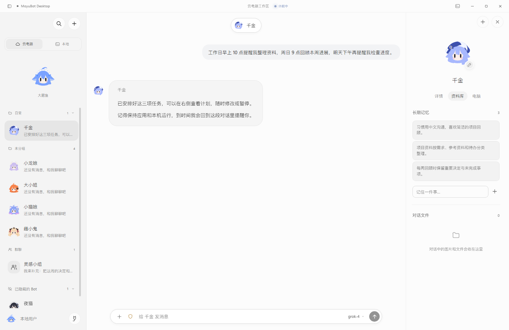
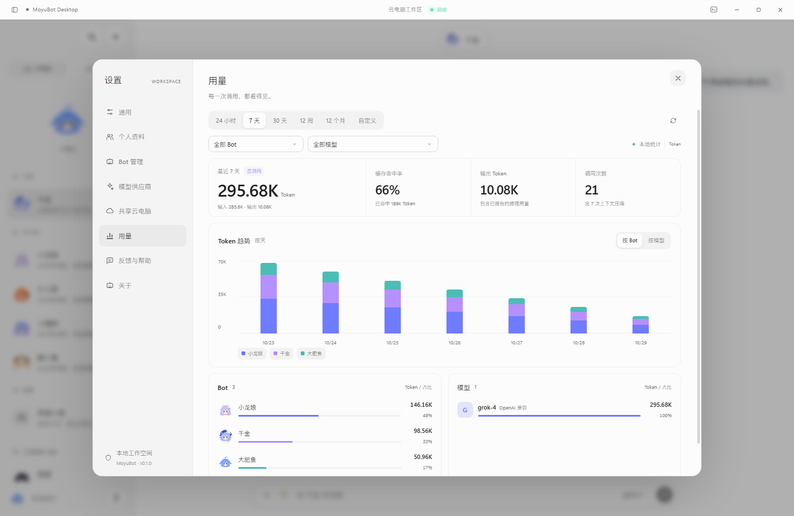

大肥鱼
chibi · 主力统筹擅长代码架构与多文件补丁 apply_patch，稳健推进跨轮复杂工程。
一群真干活的 AI 智能体，
一台按需唤醒的共享电脑。
开源多智能体桌面工作空间。接入你喜欢的任意模型，让七位性格鲜明的 Bot 在本机 Windows 或 InstaBox 云电脑里并行调研、打补丁改代码、生成 Word / Excel / PPT、沉淀四层记忆——长活自动续航，你安心摸鱼。
spawn_agent run_script
Office 原生生成 .xlsx .docx .pptx
SQLite + BGE-M3 四层长期记忆
多文件补丁 apply_patch · until_done 续航
MCP & 云端 Skills 对话内安装
apply_patch 一次性完成 4 个文件的原子补丁，无需逐个文件反复写脚本；51 项回归测试全部通过，项目状态已同步至长期记忆。
统一 pi-ai 适配层 · 原生支持 OpenAI 兼容、Anthropic、Gemini 三大协议与本地 Ollama，支持独立配置上下文窗口、压缩阈值与思考强度
不只是静态图标——每位 Bot 头像均由实时几何角色引擎驱动，根据思考、检索、执行命令、撰写文档、等待审批、云机休眠与唤醒自动切换神态。点击任意卡片即可互动并同步到上方工作台。
擅长代码架构与多文件补丁 apply_patch，稳健推进跨轮复杂工程。
掌管 SQLite + BGE-M3 混合检索、history_search 原文回溯与项目状态。
按需唤醒 Linux 云电脑，操作远程桌面、终端命令与云端 Skill 安装。
点击互动 · 弹跳旋转原生生成 .xlsx 表格、.docx 报告与 .pptx 演示并生成对话卡片。
打通 web_search + web_fetch 实时情报闭环，调用图像 API 极速出图。
通过 spawn_agent 与 run_script 并行派发只读分身，多路汇总降噪。
盯守 Cron 定时任务与 until_done 跨轮目标续航，半夜替你值班盯盘。
从专属私聊、多模型群聊，到云电脑远程桌面、四层记忆库与 Token 遥测仪表盘。切换下方页签，查看真实桌面端界面。
为每个 Bot 独立绑定供应商、模型、思考强度（低/中/高）与工具权限。生成的 Word / Excel / PPT 或代码文件以独立卡片交付，支持应用内直接预览。

邀请多位 Bot 按顺序流式发言，后发言的成员可参考前序结论并调用各自的工具。群聊拥有独立的长期记忆与文件空间，不污染私聊上下文。

纯聊天、本机读写与 API 绘图绝不唤醒云主机；调用云端工具时秒级开机，支持放大远程桌面、全屏观看与手动接管操作，空闲自动休眠不烧配额。

内置四层记忆架构：满 8 轮对话后台自动提炼长期记忆，配合 history_search 全文检索历史原话与 project_* 多项目状态自动演进。

在对话里直接创建、改期、暂停或恢复定时任务；针对复杂长任务可开启 until_done 目标续航，每轮自动验收条件，步数触顶软暂停一键续跑。

按时间范围、Bot 或供应商模型筛选输入/输出 Token、缓存读取命中率与调用次数。稳定前缀优化让长会话缓存读取率高达 97%。

从单文件读写进化到多文件原子补丁、子智能体并发沙箱、Office 原生生成与四层混合记忆。所有敏感操作均受权限闸门保护。
本地与云电脑各自拥有独立的 Bot 阵容、会话、记忆与任务。每个 Bot 锚定专属隔离目录（本机 <workspace>/<bot>/、云端 /data/home/moyubot/<bot>/），互不串味。
local_read_file / local_write_file 与 PowerShell 终端处理本地工程，全程零云端开销。
cloud_stage_file 一键上云。
cloud_* · 秒级唤醒执行
空闲计时器 · 自动挂起省钱
遇到多源调研或高噪搜索时，自动派生最多 4 个只读分身并行深挖；也可在 VM 沙箱内通过脚本组合 agent()、parallel() 与 pipeline()，顶部胶囊实时展示子代理进度。
spawn_agentsubagent_forkrun_scriptjob_control
纯 JS 引擎本机与云机同源生成 Excel 表格、Word 文档与 PPT 演示文稿，以对话卡片直接交付。内置查看器支持直接预览 .docx、.xlsx、PDF、Markdown、CSV 与图片。
make_spreadsheetmake_documentmake_slidesdeliver_file
单文件 SQLite 承载关键词 + BGE-M3 向量混合召回；满 8 轮对话后台增量提炼；新增 history_search 检索历史原话（FTS），以及 project_* 多项目状态自动演进。
memories.dbhistory_searchproject_upsertBGE-M3
开启 until_done 后跨多轮推进并逐条核验完成证据；默认无任务时长死限，单轮步数触顶（64 步）软暂停保留全部结果，一键续跑。「计划模式」先审批方案再放行写权限。
set_goaltodo_writeask_userPlan Mode
告别单文件反复写临时脚本：apply_patch 一条补丁原子新增/修改/删除多个文件，read_files 一次合并读取 20 个文件。内置免密钥联网搜索 + 网页抓取闭环。
apply_patchread_filesweb_searchweb_fetch
支持粘贴 JSON 接入 stdio / Streamable HTTP MCP 服务，或在对话中由 Bot 直接调用工具安装本机与云电脑上已有的 Skill 目录，按需调用 load_skill 注入上下文。
install_mcpinstall_skillload_skill
稳定系统提示词前缀，多轮连续请求实测缓存读取率达 97%。输入框下方实时拆解系统提示、工具定义与对话消息占比，支持按模型或 Bot 自定义压缩阈值与思考强度。
97% Cache Hitcontext_usagereasoningEffort
支持应用内检查更新、下载进度显示与 SHA256 完整性校验，一键重启无损升级。
pi-ai，打通流式思考与截断自动恢复make_spreadsheet / make_document / make_slides 纯 JS 同源生成.docx、.xlsx、PDF、Markdown 与图片deliver_file 统一输出单张对话文件卡片，区分本机打开与云端下载install_skill 支持直接校验并安装云电脑上已有的 Skillapply_patch 多文件补丁与 read_files 批量读取，大幅削减步数BGE-M3 向量与关键词混合检索，满 8 轮后台增量整理history_search 全文检索历史会话原话（Timeline Memory）project_list / upsert / switch，回复后自动演进多项目状态摘要无论是直接下载 Windows 安装包，还是从源码启动，几分钟即可投入日常工程与办公。
在「设置 → 模型供应商」填入 OpenAI / Anthropic / Gemini / DeepSeek 或本地 Ollama，支持一键拉取模型列表、独立配置上下文窗口与 BGE-M3 记忆向量模型。
选择本机 Windows 目录或接入 InstaBox 云电脑。为每位 Bot 挑选专属动态角色头像、思考强度、工具开关与审批策略（自动执行 / 每步确认 / 计划模式）。
直接拖入文件或交代目标。让 Bot 派发子代理调研、用 apply_patch 改代码、生成 Office 报告或安排 Cron 巡检，在对话内直接预览产物卡片。
未配置 API Key 时可先体验内置演示环境与 Mock 云电脑状态机；自 v0.1.2 起客户端内置自动更新检查（SHA256 校验），升级全程保留本地会话与记忆。阅读完整配置指南 ↗
MoyuBot 自研代码采用 MIT 开源许可，桌面客户端不收取任何订阅费。你只需自备模型 API Key（或连接免费的本地 Ollama）；联网搜索默认免密钥开箱即用。若使用本机 Windows 工作区，无需配置任何云电脑；若需云端隔离环境，可按需配置 InstaBox 账户。
全部会话记录、四层记忆数据库（memories.db 与历史全文索引 history.db）、项目状态、定时任务与 Token 账本均保存在你的本机数据目录，支持一键导出 Markdown 备份。所有供应商与 MCP 密钥均通过系统级加密（Electron safeStorage）单独存储在 secrets.bin.json 中，绝不明文落盘。
v0.2.4+ 引入了「步数软暂停」与默认无时长死限设计：单轮达到 64 步上限时不会报错丢弃进度，而是完整保留工具结果并在界面提供琥珀色「继续」按钮；若开启了 until_done 目标续航，系统会自动续跑直到目标验收通过。遇到模糊需求时，Bot 会通过输入框上方的 ask_user 浮卡向你提问。
make_spreadsheet、make_document 与 make_slides 采用纯 JS 引擎，在本机工作区和云电脑上均可直接生成标准的 .xlsx、.docx、.pptx 文件并生成对话卡片，.docx 与 .xlsx 可直接在内置查看器中渲染预览。MCP 与 Skills 既可在设置中导入，也可在对话中让 Bot 调用 install_mcp / install_skill（含云电脑上已有的技能目录）自助绑定。
带上你顺手的模型 API，领养七位鲜活的动态智能体。从一段对话开始，让代码补丁、资料检索、Office 报告与例行巡检自动运转。
安装包与校验文件（SHA256SUMS.txt）托管于 GitHub Releases；开发者也可克隆仓库后执行 pnpm install && pnpm dev 从源码启动。